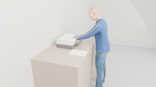
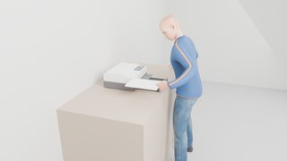
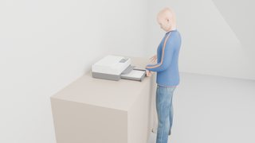
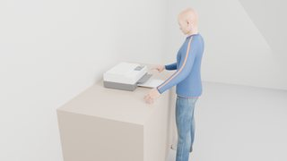
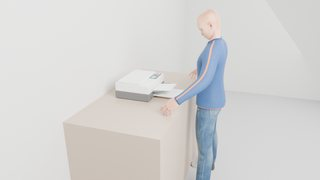

1 tasks · 1 done · 3 videos · 2 movable parts · 2 contact-tested keys · 6 hand anchors
Tasks and videos
One block per task: the action sentences it was given (each one a family with grounded arguments, with what the executor made of it; ◆ marks a sentence that satisfied a sub-goal), its sub-goals as conditions over the scene graph with the command that satisfied each (✓ / ✗, click to jump the videos there; open “conditions over the scene graph” for the exact atoms), the three camera videos of its recorded run (external, first-person, hand close-up), the phases, the step timeline and the key contacts measured in MuJoCo. Click a timeline bar or a keyframe to jump the videos there.
printer_use · external camera · 30.9 sprinter_use · first-person camera · 30.9 sprinter_use · hand close-up camera · 30.9 s
stand stillopen the paper traymove the paper stack → in the trayclose the paper traypress okwait · display, output sheet
stand still / waitlook atreachalign onpressreleasehand backopen (pull)close (push)turnmovecontact-tested pressassisted graspdevice motor (turntable)effect (light, display)◆ key activated · ▲ ▼ finger contact starts / ends (measured in MuJoCo)
lanes · gaze: where the head looks · left / right hand: that hand's steps · body: standing still · device: its own motion and the measured key contacts
0.4 s · stand still

3.7 s · open the paper tray

10.2 s · move the paper stack → in the tray

16.7 s · close the paper tray

22.8 s · press ok

27.8 s · wait · display, output sheet
Movable parts
Device shown open. Numbered markers sit on the coloured parts; the table gives joint type, travel and the mechanism label used in the runs.